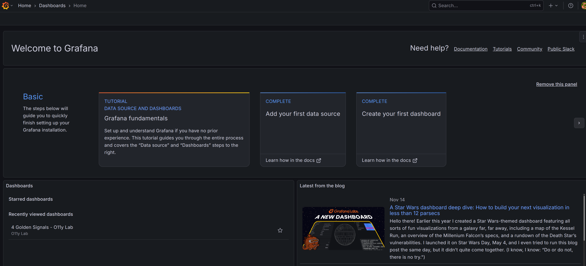
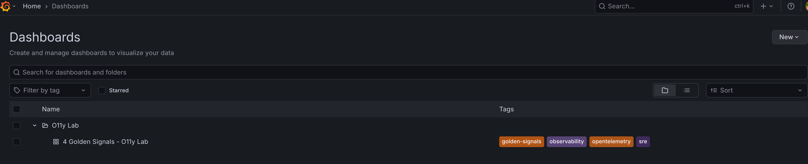
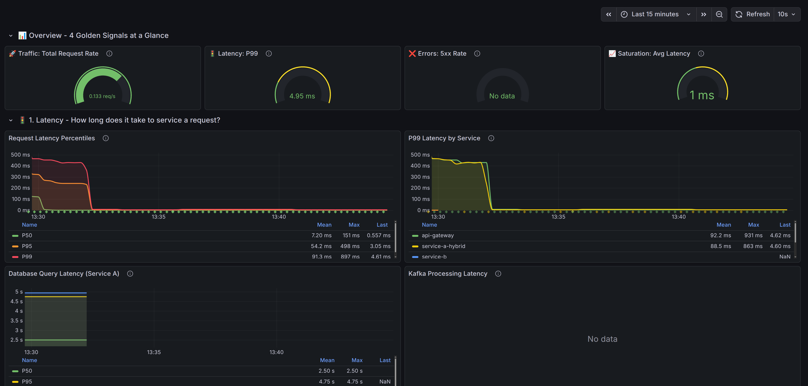
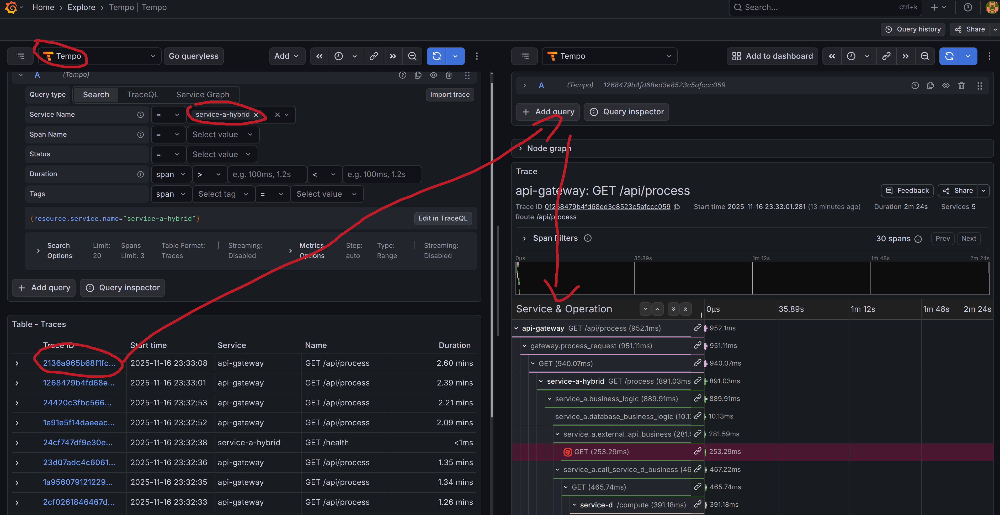
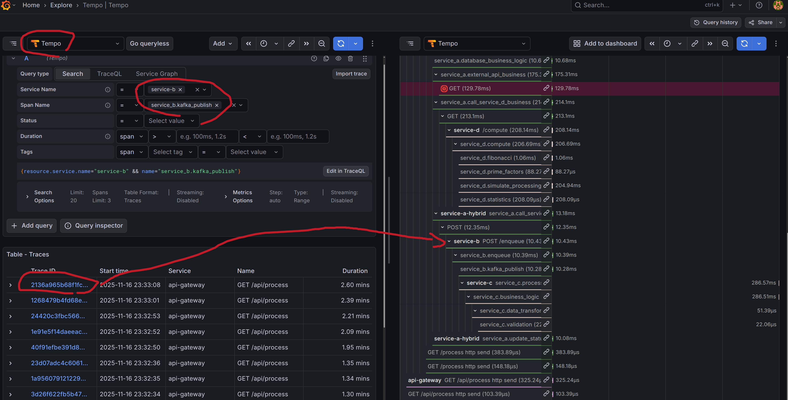

你將學到什麼
在這個實驗室中，你將學習如何：
- 搭建完整的可觀測性環境（Grafana + Prometheus + Loki + Tempo）
- 使用 Docker Compose 快速部署微服務架構
- 理解 Python 自動埋點（Auto Instrumentation）
- 實踐 Python 手動埋點（Manual Instrumentation）
- 使用 K6 進行多種負載測試（煙霧測試、負載測試、壓力測試、尖峰測試）
- 使用 Pumba 進行混沌工程（延遲注入）
- 在 Grafana 中關聯 Logs、Metrics、Traces
前置要求
- 基本的 Linux 命令列知識
- 理解 Docker 基礎概念
- Python 或 Go 程式設計基礎
實驗環境
- Ubuntu/MacOS/Windows (WSL2)
- 至少 8GB RAM
- 20GB 可用磁碟空間
安裝 Docker
Linux (Ubuntu/Debian)
# 更新軟體套件索引
sudo apt-get update
# 安裝相依套件
sudo apt-get install -y \
ca-certificates \
curl \
gnupg \
lsb-release
# 新增 Docker 官方 GPG key
sudo mkdir -p /etc/apt/keyrings
curl -fsSL https://download.docker.com/linux/ubuntu/gpg | sudo gpg --dearmor -o /etc/apt/keyrings/docker.gpg
# 設定儲存庫
echo \
"deb [arch=$(dpkg --print-architecture) signed-by=/etc/apt/keyrings/docker.gpg] https://download.docker.com/linux/ubuntu \
$(lsb_release -cs) stable" | sudo tee /etc/apt/sources.list.d/docker.list > /dev/null
# 安裝 Docker Engine
sudo apt-get update
sudo apt-get install -y docker-ce docker-ce-cli containerd.io docker-buildx-plugin docker-compose-plugin
# 將目前使用者加入 docker 群組
sudo usermod -aG docker $USER
newgrp docker
MacOS
# 使用 Homebrew 安裝
brew install --cask docker
# 或者直接下載 Docker Desktop
# https://www.docker.com/products/docker-desktop/
Windows
下載並安裝 Docker Desktop for Windows: https://www.docker.com/products/docker-desktop/
驗證安裝
# 檢查 Docker 版本
docker --version
# 應顯示: Docker version 24.0.0 或更高
# 檢查 Docker Compose
docker compose version
# 應顯示: Docker Compose version v2.20.0 或更高
# 測試 Docker 運作
docker run hello-world
Positive : 如果看到 "Hello from Docker!" 訊息，表示 Docker 安裝成功！
安裝 Python 3.11+
Linux (Ubuntu/Debian)
# 新增 deadsnakes PPA
sudo add-apt-repository ppa:deadsnakes/ppa
sudo apt-get update
# 安裝 Python 3.11
sudo apt-get install -y python3.11 python3.11-venv python3.11-dev
# 安裝 pip
curl -sS https://bootstrap.pypa.io/get-pip.py | python3.11
# 驗證安裝
python3.11 --version
pip3.11 --version
MacOS
brew install python@3.11
# 驗證
python3.11 --version
Windows
下載並安裝 Python 3.11: https://www.python.org/downloads/
安裝 Go 1.21+
Linux
# 下載 Go
wget https://go.dev/dl/go1.21.5.linux-amd64.tar.gz
# 解壓縮到 /usr/local
sudo rm -rf /usr/local/go
sudo tar -C /usr/local -xzf go1.21.5.linux-amd64.tar.gz
# 新增到 PATH (加入 ~/.bashrc 或 ~/.zshrc)
echo 'export PATH=$PATH:/usr/local/go/bin' >> ~/.bashrc
source ~/.bashrc
# 驗證
go version
MacOS
brew install go@1.21
# 驗證
go version
Windows
下載並安裝 Go: https://go.dev/dl/
安裝 K6
K6 是一個現代化的負載測試工具。
Linux
sudo gpg -k
sudo gpg --no-default-keyring --keyring /usr/share/keyrings/k6-archive-keyring.gpg --keyserver hkp://keyserver.ubuntu.com:80 --recv-keys C5AD17C747E3415A3642D57D77C6C491D6AC1D69
echo "deb [signed-by=/usr/share/keyrings/k6-archive-keyring.gpg] https://dl.k6.io/deb stable main" | sudo tee /etc/apt/sources.list.d/k6.list
sudo apt-get update
sudo apt-get install k6
# 驗證
k6 version
MacOS
brew install k6
# 驗證
k6 version
使用 Docker (跨平台)
docker pull grafana/k6:latest
docker run --rm -i grafana/k6 version
Positive : 所有工具安裝完成！現在可以開始實驗了。
取得專案程式碼
# 複製儲存庫
git clone https://github.com/yourusername/o11y_lab_for_dummies.git
cd o11y_lab_for_dummies
# 查看專案結構
ls -la
啟動所有服務
# 使用 Docker Compose 啟動
docker compose up -d
# 查看服務狀態
docker compose ps
# 查看日誌（選用）
docker compose logs -f
你應該會看到以下服務啟動：
- api-gateway: Python FastAPI 閘道器
- service-a: Python FastAPI 服務（自動埋點）
- service-b: Go 服務（手動埋點）
- service-c: Go 服務（手動埋點）
- service-d: Python Flask 服務（自動埋點）
- grafana: 視覺化平台
- prometheus: Metrics 儲存
- loki: 日誌儲存
- tempo: Trace 儲存
- otel-collector: OpenTelemetry 收集器
- postgres: 資料庫
- kafka: 訊息佇列
Overall Architecture
┌─────────────┐
│ Client │
└──────┬──────┘
│ HTTP
▼
┌─────────────────────────────────────────────────────────────┐
│ API Gateway │
│ (Python/FastAPI) │
│ Auto Instrumentation │
└──────┬──────────────────────────────────────────────────────┘
│
▼
┌─────────────────────────────────────────────────────────────┐
│ Service A │
│ (Python/FastAPI) │
│ Auto Instrumentation │
│ ┌──────────┐ ┌──────────┐ ┌──────────┐ ┌──────────┐ │
│ │PostgreSQL│ │Service D │ │Service B │ │3rd Party │ │
│ │ Query │ │ Call │ │ Call │ │API Call │ │
│ └──────────┘ └──────────┘ └──────────┘ └──────────┘ │
└──────┬────────────────┬────────────────┬─────────────────────┘
│ │ │
▼ ▼ ▼
┌─────────┐ ┌──────────┐ ┌──────────┐
│PostgreSQL │ Service D│ │Service B │
│ │ │ (Python/ │ │(Go/Gin) │
│ │ │ Flask) │ │Manual │
└─────────┘ │ Auto │ │Instrument│
│Instrument│ └────┬─────┘
└──────────┘ │
▼
┌─────────┐
│ Kafka │
│ Queue │
└────┬────┘
│
▼
┌──────────┐
│Service C │
│(Go/Gin) │
│Manual │
│Instrument│
└──────────┘
Observability Architecture
┌─────────────────────────────────────────────────────────────┐
│ Application Services │
│ API Gateway │ Service A │ Service B │ Service C │ Service D│
└──────────────────────┬──────────────────────────────────────┘
│ OTLP (gRPC/HTTP)
│ - Traces
│ - Metrics
│ - Logs
▼
┌─────────────────────────────────────────────────────────────┐
│ OpenTelemetry Collector │
│ ┌──────────┐ ┌───────────┐ ┌──────────┐ │
│ │Receivers │→ │Processors │→ │Exporters │ │
│ └──────────┘ └───────────┘ └──────────┘ │
│ │ │ │ │
│ OTLP Batch OTLP/Prom/Loki │
└───────┼──────────────┼───────────────┼──────────────────────┘
│ │ │
▼ ▼ ▼
┌─────────┐ ┌───────────┐ ┌─────────┐
│ Tempo │ │Prometheus │ │ Loki │
│(Traces) │ │ (Metrics) │ │ (Logs) │
└────┬────┘ └─────┬─────┘ └────┬────┘
│ │ │
└──────────────┼───────────────┘
▼
┌──────────────┐
│ Grafana │
│ Dashboard │
└──────────────┘
等待服務就緒
# 檢查所有容器是否健康
docker compose ps
# 等待約 30-60 秒讓所有服務啟動完成
Positive : 所有服務啟動後，我們就可以存取 Grafana 了！
登入 Grafana
- 開啟瀏覽器存取: http://localhost:3000
- 使用預設憑證登入:
- 使用者名稱:
admin - 密碼:
admin
- 使用者名稱:
- 首次登入會提示修改密碼，可以選擇跳過（Skip）
Grafana 介面介紹
登入後你會看到 Grafana 主介面：

左側選單列
- Home: 首頁
- Dashboards: 儀表板清單
- Explore: 資料探索介面（我們主要使用這個）
- Alerting: 告警配置
- Configuration: 配置選項
查看資料來源
- 點擊左側選單的齒輪圖示 (Configuration)
- 選擇 Data sources
- 你應該會看到以下資料來源已配置:
- Prometheus: Metrics 資料
- Loki: 日誌資料
- Tempo: Trace 資料
探索預先配置的 Dashboard
- 點擊左側選單的 Dashboard 圖示
- 你會看到預先配置的儀表板:
- OpenTelemetry Overview: 整體概覽
- Service Performance: 服務效能監控
- Distributed Tracing: 分散式追蹤
儀表板列表:

Four Golden Signal 儀表板:
Positive : Grafana 平台已經準備好了！接下來我們將使用 K6 生成流量。
K6 測試腳本介紹
專案中已經包含了四種不同的 K6 測試腳本，分別用於不同的測試場景：
1. 煙霧測試 (Smoke Test) - smoke-test.js
- 目的: 驗證系統基本功能
- 虛擬用戶: 1 個
- 持續時間: 1 分鐘
- 使用時機: 部署後快速驗證、CI/CD 流程
2. 負載測試 (Load Test) - load-test.js
- 目的: 測試系統在預期負載下的性能
- 虛擬用戶: 5 → 20 → 50（多階段）
- 持續時間: 約 3.5 分鐘
- 使用時機: 性能基準測試、容量規劃
3. 壓力測試 (Stress Test) - stress-test.js
- 目的: 找出系統性能瓶頸和極限
- 虛擬用戶: 10 → 50 → 100 → 200（逐步增加）
- 持續時間: 約 6 分鐘
- 使用時機: 尋找系統瓶頸、驗證降級機制
4. 尖峰測試 (Spike Test) - spike-test.js
- 目的: 測試系統應對突發流量的能力
- 虛擬用戶: 10 → 100 → 10 → 150（快速變化）
- 持續時間: 約 4 分鐘
- 使用時機: 測試自動擴展、驗證系統彈性
查看測試腳本
# 查看所有可用的測試腳本
ls -lh k6/
# 查看負載測試腳本內容
cat k6/load-test.js
# 查看 README 文檔
cat k6/README.md
執行 K6 測試
方式一：使用 Makefile（推薦，無需安裝 K6）
專案已整合 K6 到 Makefile，使用 Docker 執行，完全不需要本地安裝 K6！
# 查看所有 K6 測試命令和說明
make k6-help
# 1. 煙霧測試 - 快速驗證系統功能（1分鐘）
make k6-smoke
# 2. 負載測試 - 測試正常負載下的性能（3.5分鐘）
make k6-load
# 3. 尖峰測試 - 測試突發流量（4分鐘）
make k6-spike
# 4. 壓力測試 - 找出系統極限（6分鐘，可能影響系統穩定性）
make k6-stress
# 清理測試結果
make k6-clean
優點：
- ✅ 無需本地安裝 K6，使用 Docker 執行
- ✅ 命令簡單易記
- ✅ 自動處理網路和檔案掛載
- ✅ 環境一致性高
方式二：直接使用 K6（需先安裝）
如果你已經安裝了 K6：
# 1. 煙霧測試
k6 run k6/smoke-test.js
# 2. 負載測試
k6 run k6/load-test.js
# 3. 尖峰測試
k6 run k6/spike-test.js
# 4. 壓力測試
k6 run k6/stress-test.js
方式三：使用 Docker 手動執行
# 使用 Docker 運行負載測試
docker run --rm -i --network=host \
-v $(pwd)/k6:/scripts \
grafana/k6:latest run /scripts/load-test.js
測試結果解讀
執行測試後，你會在終端看到詳細的結果報告：
📊 測試結果摘要
==================================================
█ THRESHOLDS
http_req_duration
✓ 'p(95)<2000' p(95)=969.75ms
{name:process}
✓ 'p(99)<5000' p(99)=1.2s
http_req_failed
✓ 'rate<0.01' rate=0.00%
process_success_rate
✓ 'rate>0.99' rate=100.00%
█ TOTAL RESULTS
checks_total.......: 8275 43.39831/s
checks_succeeded...: 96.70% 8002 out of 8275
checks_failed......: 3.29% 273 out of 8275
✓ 狀態碼是 200
✓ 回應包含 status
✓ 回應包含 data
✓ 回應時間 < 5秒
✓ Stats 狀態碼是 200
✗ Stats 回應包含 service
↳ 0% — ✓ 0 / ✗ 273
✓ Stats 回應包含統計數據
✓ Info 狀態碼是 200
✓ Info 回應包含 service
✓ API Gateway 健康檢查通過
✓ Service A 健康檢查通過
CUSTOM
process_duration...............: avg=676.445165 min=291 med=654 max=1538 p(90)=947 p(95)=1039
process_success_rate...........: 100.00% 1541 out of 1541
HTTP
http_req_duration..............: avg=402.79ms min=603.81µs med=468.43ms max=1.53s p(90)=862.94ms p(95)=969.75ms
{ expected_response:true }...: avg=402.79ms min=603.81µs med=468.43ms max=1.53s p(90)=862.94ms p(95)=969.75ms
{ name:process }.............: avg=676.31ms min=291.57ms med=653.74ms max=1.53s p(90)=947.12ms p(95)=1.03s
http_req_failed................: 0.00% 0 out of 2623
http_reqs......................: 2623 13.756347/s
EXECUTION
iteration_duration.............: avg=2.67s min=1.38s med=2.67s max=4.43s p(90)=3.49s p(95)=3.62s
iterations.....................: 1541 8.081788/s
vus............................: 1 min=1 max=50
vus_max........................: 50 min=50 max=50
NETWORK
data_received..................: 1.8 MB 9.2 kB/s
data_sent......................: 208 kB 1.1 kB/s
running (3m10.7s), 00/50 VUs, 1541 complete and 0 interrupted iterations
default ✓ [ 100% ] 00/50 VUs 3m10s
✅ Load test complete! Check output above for results.
關鍵指標說明：
http_req_duration: 請求響應時間avg: 平均響應時間p(95): 95% 的請求在此時間內完成p(99): 99% 的請求在此時間內完成
http_req_failed: 請求失敗率checks: 檢查項目通過率
在 Grafana 中即時觀察測試影響
在執行 K6 測試時，建議同時在 Grafana 中觀察系統指標：
1. 觀察 Metrics（指標）
- 開啟 Grafana: http://localhost:3000
- 點擊左側的 Explore 圖示
- 選擇資料來源: Prometheus
- 輸入以下查詢並點擊 Run query:
# 請求速率 rate(http_server_requests_seconds_count[1m]) # 平均響應時間 rate(http_server_requests_seconds_sum[1m]) / rate(http_server_requests_seconds_count[1m]) # 錯誤率 rate(http_server_requests_seconds_count{status=~"5.."}[1m])
2. 觀察 Traces（追蹤）
- 在 Grafana Explore 中
- 切換資料來源為: Tempo
- 選擇 Search 標籤
- 設定搜尋條件:
- Service Name:
api-gateway或service-a-hybrid - 時間範圍: 最近 15 分鐘
- Service Name:
- 點擊任一 Trace 查看詳細的分散式追蹤
你會看到：
- 完整的請求流程（Gateway → Service A → Service D/B）
- 每個服務的處理時間
- 資料庫查詢耗時
- 外部 API 調用時間
3. 觀察 Logs（日誌）
- 在 Grafana Explore 中
- 切換資料來源為: Loki
- 使用以下查詢:
# 查看所有服務日誌 {container_name=~"api-gateway|service-a|service-b|service-d"} # 只看錯誤日誌 {container_name=~"api-gateway|service-a"} |= "ERROR" # 根據 trace_id 查詢（從 Trace 中複製） {container_name=~".*"} |= "your-trace-id-here"
實戰演練：完整測試流程
建議按照以下順序進行測試：
Step 1: 煙霧測試（1 分鐘）
# 使用 Makefile（推薦）
make k6-smoke
# 或使用 K6 直接執行
k6 run k6/smoke-test.js
✅ 確認：所有檢查都通過，失敗率 < 1%
Step 2: 負載測試（3.5 分鐘）
# 終端 1: 監控即時日誌
docker compose logs -f api-gateway service-a
# 終端 2: 執行負載測試（使用 Makefile）
make k6-load
# 或使用 K6 直接執行
k6 run k6/load-test.js
✅ 確認：在 Grafana 中觀察到請求速率上升
Step 3: 分析測試結果
- 在 Grafana Explore (Tempo) 中找到測試期間的 traces
- 點擊一個 trace，查看完整的調用鏈路
- 切換到 Logs 標籤，查看相關日誌
- 注意 trace_id 如何關聯 logs 和 traces
Step 4: 尖峰測試（選用，4 分鐘）
# 使用 Makefile
make k6-spike
# 或使用 K6 直接執行
k6 run k6/spike-test.js
✅ 觀察：系統在流量突增時的表現和恢復能力
測試建議與最佳實踐
Positive : 提示：建議測試順序為 smoke → load → spike → stress，避免一開始就執行壓力測試導致系統不穩定。
Negative : 警告：壓力測試可能會導致系統資源耗盡或服務崩潰，建議在獨立環境中執行。
進階用法
自訂測試參數
# 使用環境變數指定不同的服務地址
k6 run -e BASE_URL=http://your-gateway:8080 k6/load-test.js
# 輸出結果到 JSON 檔案
k6 run --out json=results.json k6/load-test.js
# 在背景執行持續負載（用於混沌測試）
k6 run --duration 10m k6/load-test.js &
結合混沌測試
# 終端 1: 執行持續負載
k6 run --duration 10m k6/load-test.js
# 終端 2: 注入網路延遲
make chaos-network-delay
# 觀察系統在故障情況下的表現
Positive : 完成測試後，檢查 k6 目錄中生成的 JSON 報告檔案，可用於深入分析和歷史對比。
什麼是混沌工程？
混沌工程是一種透過主動注入故障來測試系統韌性的實踐方法。在生產環境中，服務可能遇到：
- 🌐 網路延遲或斷線
- 💥 服務突然崩潰
- 📉 資源不足（CPU、記憶體）
- 🔌 依賴服務失效
透過混沌測試，我們可以：
- 驗證系統的容錯能力
- 發現隱藏的單點故障
- 測試監控和告警是否有效
- 提升團隊的應變能力
Pumba 簡介
Pumba 是一個專為 Docker 容器設計的混沌工程工具，支援：
- 網路混沌：延遲、丟包、頻寬限制
- 容器混沌：隨機終止、暫停、資源限制
- 靈活控制：指定持續時間、目標容器、故障強度
最棒的是：我們已經在 Makefile 中整合了 Pumba，無需安裝！
查看可用的混沌測試命令
# 查看所有混沌測試命令
make chaos-help
你會看到：
- 基礎混沌測試（網路延遲、丟包、容器終止）
- 服務特定測試（針對單一服務）
- 複雜場景（模擬真實故障）
Positive : 提示：所有混沌測試都使用 Docker 運行 Pumba，不需要額外安裝任何工具！
第一個混沌測試 - 網路延遲
讓我們從最簡單的測試開始：給 Service A 添加 1 秒的網路延遲。
# 給 Service A 添加 1000ms 延遲，持續 3 分鐘
make chaos-delay-service-a
你會看到：
🐌 給 Service A 添加 1000ms 延遲，持續 3 分鐘
✅ Service A 延遲已應用
在 Grafana 中觀察影響
現在混沌測試正在運行，讓我們在 Grafana 中觀察影響：
- 同時生成測試流量：
k6 run k6/load-test.js - 在 Grafana 中查看延遲指標：
- 打開 Grafana: http://localhost:3000
- 進入 Explore
- 選擇 Prometheus 數據源
- 執行查詢：
histogram_quantile(0.95, rate(http_server_duration_milliseconds_bucket{service_name="service-a"}[1m]) ) - 觀察結果：
- 正常情況：P95 延遲約 50-100ms
- 混沌注入後：P95 延遲上升到 1000ms 以上

停止混沌測試
3 分鐘後，測試會自動停止。或者手動停止：
# 停止所有混沌測試
make chaos-stop
# 清理 Pumba 容器
make chaos-clean
查看混沌測試狀態
# 查看當前運行的混沌測試
make chaos-status
Negative : 重要提醒：混沌測試會真實影響服務效能。實驗完成後記得停止測試，避免影響後續步驟！
現在你已經了解基礎，讓我們探索更多混沌測試場景。本章節將按難度循序漸進介紹。
Level 1：基礎網路混沌 ⭐
這些測試適合初學者，幫助你理解網路問題對系統的影響。
1.1 網路延遲（所有服務）
# 給所有應用服務添加 500ms 延遲，持續 5 分鐘
make chaos-network-delay
適用場景：
- 模擬跨區域網路
- 測試超時設定是否合理
- 驗證用戶體驗降級策略
觀察重點：
- 整體系統的回應時間
- 是否有服務因超時而失敗
- Grafana 中的 Trace 鏈路延遲
1.2 網路丟包
# 給所有服務添加 20% 丟包率，持續 5 分鐘
make chaos-network-loss
適用場景：
- 模擬不穩定的網路環境
- 測試重試機制
- 驗證錯誤處理
觀察重點：
- 錯誤率是否上升
- 重試邏輯是否生效
- Logs 中的錯誤訊息
1.3 網路包損壞
# 給所有服務添加 10% 包損壞率，持續 5 分鐘
make chaos-network-corrupt
適用場景：
- 測試資料完整性驗證
- 模擬硬體故障
- 驗證協定的錯誤檢測能力
Positive : 小技巧：可以同時在另一個終端視窗運行 make chaos-status 來即時監控混沌測試狀態。
Level 2：服務特定混沌 ⭐⭐
針對單一服務進行測試，更精確地模擬特定故障。
2.1 測試單一服務的韌性
# 給 Service B 添加 30% 丟包率
make chaos-loss-service-b
實驗步驟：
- 啟動混沌測試
- 運行 K6:
k6 run k6/load-test.js - 在 Grafana 中查看：
- Service A 是否能正常處理 Service B 的故障？
- 錯誤是否被正確記錄？
- Trace 中是否顯示失敗的 Span？
2.2 資料庫混沌測試
# 對 PostgreSQL 進行壓力測試
make chaos-stress-postgres
觀察重點：
- 資料庫查詢延遲
- 連接池是否耗盡
- 應用是否有快取機制來減輕影響
2.3 Message Queue 混沌
# 暫停 Kafka 容器 30 秒
make chaos-pause-kafka
觀察重點：
- Service B 和 Service C 如何處理消息發送失敗
- 消息是否會丟失
- 恢復後是否能正常消費
Level 3：容器生命週期混沌 ⭐⭐⭐
測試服務在突然終止和重啟時的行為。
3.1 隨機殺死服務
# 每 30 秒隨機殺死一個應用服務
make chaos-kill-random
這個測試會：
- 隨機選擇一個服務（api-gateway 或 service-a/b/c/d）
- 發送 SIGKILL 信號終止容器
- Docker Compose 會自動重啟容器
實驗步驟：
- 啟動混沌測試
- 在另一個終端持續運行 K6
- 觀察 Grafana 中的：
- 錯誤率變化
- 服務重啟的 Trace 缺口
- Metrics 的斷點
- 運行 2-3 分鐘後停止：
make chaos-stop
3.2 殺死 API Gateway
# 一次性殺死 API Gateway
make chaos-kill-gateway
觀察重點：
- 重啟需要多久？
- 期間有多少請求失敗？
- 負載均衡器（如果有）如何處理？
Negative : 注意：chaos-kill-random 會持續運行，記得在實驗結束後執行 make chaos-stop 停止！
Level 4：複雜真實場景 ⭐⭐⭐⭐
模擬多個故障同時發生的複雜情況。
4.1 微服務鏈路故障
這個場景模擬多個服務同時出現不同問題：
# 啟動複雜場景
make chaos-microservice-chain
這個命令會同時：
- Service A：網路延遲 800ms
- Service B：15% 丟包
- Service C：CPU 壓力
實驗步驟：
- 啟動混沌測試
- 持續生成流量：
k6 run k6/load-test.js - 在 Grafana 中觀察鏈路：
- 打開 Tempo（Traces）
- 查找完整的請求鏈路
- 觀察哪個服務成為瓶頸
- 分析 Metrics：
# 各服務的錯誤率 rate(http_server_requests_total{status_code=~"5.."}[1m]) # 各服務的延遲 histogram_quantile(0.95, rate(http_server_duration_milliseconds_bucket[1m])) - 查看 Logs：
- 在 Grafana Loki 中搜尋錯誤
- 點擊 Trace ID 關聯查看
- 5 分鐘後停止：
make chaos-stop
4.2 資料庫中斷場景
# 模擬資料庫中斷（2000ms 延遲）
make chaos-database-outage
觀察重點：
- Service A 的資料庫查詢超時
- 連接池是否耗盡
- 應用如何處理資料庫慢查詢
4.3 網路分區
# 模擬 Service A 和 Service B 之間網路分區
make chaos-network-partition
這個測試會：
- Service A 和 Service B 各有 90% 丟包
- 模擬兩個服務幾乎無法通訊
觀察重點：
- 系統如何降級
- 是否有 Circuit Breaker 觸發
- 錯誤處理和 Fallback 機制
Level 5：自訂混沌測試 ⭐⭐⭐⭐⭐
你也可以直接使用 Pumba Docker 命令進行更靈活的測試：
# 對特定服務添加複雜網路條件
docker run -d --name my-chaos-test \
-v /var/run/docker.sock:/var/run/docker.sock \
gaiaadm/pumba:latest \
netem --duration 3m \
--tc-image ghcr.io/alexei-led/pumba-alpine-nettools:latest \
delay --time 1000 --jitter 300 --distribution normal \
service-a
自訂參數：
--time: 延遲時間（毫秒）--jitter: 抖動範圍--distribution: 分佈類型（normal, pareto, paretonormal）--correlation: 相關性百分比
混沌測試最佳實踐
Positive : 循序漸進 : 1. 先從單一、簡單的故障開始 : 2. 逐步增加複雜度 : 3. 在生產環境前先在測試環境驗證 : 4. 建立回滾計畫
Positive : 觀察與分析 : 1. 使用 Grafana 的三大支柱（Logs、Metrics、Traces） : 2. 記錄每次實驗的發現 : 3. 驗證告警是否正常觸發 : 4. 測量恢復時間（MTTR）
Positive : 安全第一 : 1. 永遠先在非生產環境測試 : 2. 設定明確的測試時間窗口 : 3. 確保可以快速停止測試 : 4. 通知團隊成員正在進行混沌測試
混沌測試 Checklist
實驗前：
- [ ] 確認所有服務正常運行 (
make status) - [ ] Grafana 可以正常存取
- [ ] K6 已安裝並可以運行
- [ ] 了解如何停止測試 (
make chaos-stop)
實驗中：
- [ ] 在 Grafana 中即時觀察
- [ ] 記錄觀察到的現象
- [ ] 截圖保存重要發現
實驗後：
- [ ] 停止所有混沌測試 (
make chaos-stop) - [ ] 清理 Pumba 容器 (
make chaos-clean) - [ ] 驗證服務恢復正常
- [ ] 總結學習重點
什麼是自動埋點？
自動埋點（Auto Instrumentation）是指無需修改程式碼，透過 OpenTelemetry Agent 或 SDK 自動捕獲遙測資料。
Service-A 的自動埋點配置
查看 Service-A 的 Dockerfile：
cat services/service-a/Dockerfile
你會看到類似這樣的配置：
FROM python:3.11-slim
# 安裝相依套件
COPY requirements.txt .
RUN pip install -r requirements.txt
# 安裝 OpenTelemetry 自動埋點套件
RUN pip install opentelemetry-distro \
opentelemetry-exporter-otlp
# 自動檢測並安裝相關函式庫的埋點
RUN opentelemetry-bootstrap -a install
COPY . /app
WORKDIR /app
# 使用 opentelemetry-instrument 啟動應用程式
CMD ["opentelemetry-instrument", "uvicorn", "main:app", "--host", "0.0.0.0", "--port", "8001"]
關鍵元件說明
1. opentelemetry-distro
OpenTelemetry 的完整發行版，包含所有核心功能。
2. opentelemetry-bootstrap
自動檢測應用程式相依的函式庫，並安裝對應的埋點套件：
- FastAPI →
opentelemetry-instrumentation-fastapi - Requests →
opentelemetry-instrumentation-requests - SQLAlchemy →
opentelemetry-instrumentation-sqlalchemy
3. opentelemetry-instrument
啟動時的包裝器，自動啟用所有埋點。
環境變數配置
在 docker-compose.yaml 中，Service-A 配置了以下環境變數：
environment:
OTEL_SERVICE_NAME: service-a
OTEL_TRACES_EXPORTER: otlp
OTEL_METRICS_EXPORTER: otlp
OTEL_LOGS_EXPORTER: otlp
OTEL_EXPORTER_OTLP_ENDPOINT: http://otel-collector:4317
OTEL_EXPORTER_OTLP_PROTOCOL: grpc
OTEL_RESOURCE_ATTRIBUTES: service.name=service-a,service.version=1.0.0
查看自動生成的 Traces
- 觸發一個請求:
curl http://localhost:8080/api/process - 在 Grafana 中:
- 開啟 Explore
- 選擇資料來源: Tempo
- 選擇 Service:
service-a-hybrid - 點擊 Run query
- 點擊任意 trace，你會看到自動生成的 spans:
- HTTP 請求 span
- 資料庫查詢 span
- 下游服務呼叫 span

自動埋點的優勢
✅ 零程式碼侵入: 不需要修改業務程式碼 ✅ 快速啟用: 幾分鐘內完成配置 ✅ 覆蓋廣泛: 自動支援常見框架和函式庫 ✅ 標準化: 遵循 OpenTelemetry 規範
自動埋點的局限
❌ 缺乏業務情境: 無法捕獲業務特定的指標 ❌ 精細度有限: 無法自訂 span 屬性 ❌ 效能開銷: 可能捕獲不必要的資訊
Positive : 自動埋點適合快速開始和通用場景，但複雜業務需要手動埋點！
為什麼需要手動埋點？
手動埋點允許你：
- 新增業務特定的 metrics 和 traces
- 自訂 span 屬性和事件
- 最佳化效能（只記錄需要的資料）
- 新增業務語義
Service-D 的手動埋點範例
查看 Service-D 的程式碼：
cat services/service-d/app.py
1. 初始化 OpenTelemetry
from opentelemetry import trace, metrics
from opentelemetry.sdk.trace import TracerProvider
from opentelemetry.sdk.trace.export import BatchSpanProcessor
from opentelemetry.exporter.otlp.proto.grpc.trace_exporter import OTLPSpanExporter
from opentelemetry.sdk.resources import Resource
from opentelemetry.sdk.metrics import MeterProvider
from opentelemetry.sdk.metrics.export import PeriodicExportingMetricReader
from opentelemetry.exporter.otlp.proto.grpc.metric_exporter import OTLPMetricExporter
# 定義服務資源
resource = Resource.create({
"service.name": "service-d",
"service.version": "1.0.0",
"deployment.environment": "production"
})
# 配置 Trace Provider
trace_provider = TracerProvider(resource=resource)
span_processor = BatchSpanProcessor(
OTLPSpanExporter(endpoint="http://otel-collector:4317")
)
trace_provider.add_span_processor(span_processor)
trace.set_tracer_provider(trace_provider)
# 配置 Metrics Provider
metric_reader = PeriodicExportingMetricReader(
OTLPMetricExporter(endpoint="http://otel-collector:4317")
)
meter_provider = MeterProvider(
resource=resource,
metric_readers=[metric_reader]
)
metrics.set_meter_provider(meter_provider)
# 取得 tracer 和 meter
tracer = trace.get_tracer(__name__)
meter = metrics.get_meter(__name__)
2. 建立自訂 Span
from flask import Flask, request
from opentelemetry import trace
app = Flask(__name__)
tracer = trace.get_tracer(__name__)
@app.route('/process')
def process():
# 建立一個自訂 span
with tracer.start_as_current_span("business_logic") as span:
# 新增自訂屬性
span.set_attribute("user.id", request.headers.get("X-User-ID", "anonymous"))
span.set_attribute("request.size", len(request.data))
# 新增事件
span.add_event("Processing started", {
"items": 10,
"priority": "high"
})
# 業務邏輯
result = do_business_logic()
# 新增結果屬性
span.set_attribute("result.count", len(result))
return result
3. 建立自訂 Metrics
from opentelemetry import metrics
meter = metrics.get_meter(__name__)
# 建立計數器
request_counter = meter.create_counter(
name="business.requests.total",
description="Total number of business requests",
unit="1"
)
# 建立直方圖
processing_time = meter.create_histogram(
name="business.processing.duration",
description="Processing duration in milliseconds",
unit="ms"
)
# 使用 metrics
@app.route('/process')
def process():
start_time = time.time()
# 增加計數器
request_counter.add(1, {"endpoint": "/process", "method": "GET"})
# 處理請求
result = do_work()
# 記錄處理時間
duration = (time.time() - start_time) * 1000
processing_time.record(duration, {"status": "success"})
return result
4. 結構化日誌與 Trace 關聯
import logging
from opentelemetry import trace
# 配置 JSON 日誌
import json_log_formatter
formatter = json_log_formatter.JSONFormatter()
json_handler = logging.StreamHandler()
json_handler.setFormatter(formatter)
logger = logging.getLogger(__name__)
logger.addHandler(json_handler)
logger.setLevel(logging.INFO)
@app.route('/process')
def process():
# 取得目前 span context
span = trace.get_current_span()
trace_id = format(span.get_span_context().trace_id, '032x')
span_id = format(span.get_span_context().span_id, '016x')
# 記錄包含 trace 資訊的日誌
logger.info("Processing request", extra={
"trace_id": trace_id,
"span_id": span_id,
"user_id": request.headers.get("X-User-ID"),
"endpoint": "/process"
})
return result
在 Grafana 中查看手動埋點資料
查看自訂 Span
- Grafana → Explore → Tempo
- 搜尋 service-d 的 traces
- 你會看到自訂的
business_logicspan - 點擊查看詳細屬性:
user.idrequest.sizeresult.count
查看自訂 Metrics
- Grafana → Explore → Prometheus
- 查詢:
rate(business_requests_total[1m]) - 或者:
histogram_quantile(0.95, rate(business_processing_duration_bucket[1m]) )
關聯日誌
- Grafana → Explore → Loki
- 查詢:
{service_name="service-d"} | json - 點擊任意日誌行的 trace_id，直接跳轉到對應的 trace

手動埋點最佳實踐
- 有意義的 Span 名稱: 使用業務術語，如
checkout_cart而不是process - 新增情境屬性: 使用者ID、訂單ID、產品類型等
- 記錄關鍵事件: 支付開始、庫存檢查、第三方呼叫等
- 控制基數: 避免高基數屬性（如時間戳記、UUID）作為 metric 標籤
- 效能考量: 使用採樣、避免在熱路徑建立過多 span
Positive : 手動埋點給你完全控制權，但需要更多程式碼和維護工作！
最佳實踐：結合兩者
在實際專案中，通常會混合使用自動埋點和手動埋點：
# app.py
from opentelemetry.instrumentation.fastapi import FastAPIInstrumentor
from opentelemetry import trace
from fastapi import FastAPI
app = FastAPI()
# 1. 啟用自動埋點（框架層級）
FastAPIInstrumentor.instrument_app(app)
# 2. 取得 tracer 用於手動埋點（業務層級）
tracer = trace.get_tracer(__name__)
@app.get("/checkout")
async def checkout(cart_id: str):
# 自動埋點已經建立了 HTTP span
# 新增業務層級的 span
with tracer.start_as_current_span("validate_cart") as span:
span.set_attribute("cart.id", cart_id)
cart = await validate_cart(cart_id)
with tracer.start_as_current_span("calculate_total") as span:
total = calculate_total(cart)
span.set_attribute("cart.total", total)
with tracer.start_as_current_span("process_payment") as span:
span.set_attribute("payment.method", "credit_card")
result = await process_payment(total)
return result
在 Grafana 中查看混合埋點
生成的 trace 會顯示：
HTTP POST /checkout (auto) [200ms]
├─ validate_cart (manual) [50ms]
│ └─ SELECT FROM carts (auto) [20ms]
├─ calculate_total (manual) [30ms]
└─ process_payment (manual) [120ms]
└─ HTTP POST /api/charge (auto) [100ms]
決策樹：何時使用哪種方式？
是否是標準框架/函式庫（HTTP、DB、訊息佇列）？
├─ 是 → 使用自動埋點
└─ 否 → 是否是業務核心邏輯？
├─ 是 → 使用手動埋點
└─ 否 → 可能不需要埋點
Positive : 自動埋點打基礎，手動埋點加深度！
Trace to Logs
在查看 trace 時，直接跳轉到相關日誌：
- 在 Tempo 中開啟一個 trace
- 點擊任意 span
- 在右側面板找到 Logs for this span
- 點擊後自動跳轉到 Loki，顯示該 span 的日誌
Logs to Traces
從日誌跳轉到 trace：
- 在 Loki 中查詢:
{service_name="service-a"} | json - 在日誌行中找到
trace_id欄位 - 點擊 trace_id 旁的圖示，跳轉到 Tempo
Metrics to Traces
從 metrics 告警定位到具體請求：
- 在 Prometheus 中發現異常:
rate(http_requests_total{status="500"}[1m]) > 0 - 記下時間範圍和服務名稱
- 在 Tempo 中按時間和服務搜尋 traces
- 找到失敗的請求，查看詳細資訊
建立關聯 Dashboard
建立一個包含三者的 dashboard：
{
"dashboard": {
"title": "Service Overview",
"panels": [
{
"title": "Request Rate",
"type": "graph",
"datasource": "Prometheus",
"targets": [
{
"expr": "rate(http_requests_total[5m])"
}
]
},
{
"title": "Recent Traces",
"type": "traces",
"datasource": "Tempo"
},
{
"title": "Error Logs",
"type": "logs",
"datasource": "Loki",
"targets": [
{
"expr": "{service_name=\"service-a\"} |= \"ERROR\""
}
]
}
]
}
}
Positive : 三大支柱的關聯是可觀測性的精髓！
讓我們透過一個完整的場景來演練：
場景：發現並定位效能問題
步驟 1: 注入延遲
# 對 service-b 注入 1 秒延遲
pumba netem --duration 5m delay --time 1000 o11y_lab_for_dummies-service-b-1
步驟 2: 生成流量
# 執行 K6 測試
k6 run k6/load-test.js
步驟 3: 在 Prometheus 發現問題
- Grafana → Explore → Prometheus
- 查詢:
histogram_quantile(0.95, rate(http_server_duration_milliseconds_bucket[1m]) ) - 發現 P95 延遲從 100ms 跳到 1100ms
步驟 4: 在 Tempo 定位慢請求
- 切換到 Tempo
- 設定篩選:
- Service:
service-b - Min Duration:
1s
- Service:
- 找到慢 trace，查看詳情
步驟 5: 在 Loki 查看相關日誌
- 在 trace 詳情中點擊 "Logs for this span"
- 或者手動查詢:
{service_name="service-b"} | json | trace_id="<your-trace-id>" - 查看錯誤日誌和情境
步驟 6: 根因分析
透過 trace waterfall 圖，你會看到：
- service-b 的某個內部操作耗時 1000ms
- 這正是我們注入的延遲
步驟 7: 驗證修復（移除延遲）
# Pumba 注入會自動過期，或手動重啟容器
docker compose restart service-b
再次執行 K6，確認延遲恢復正常。
總結工作流程
Metrics (發現異常)
→ Traces (定位具體請求)
→ Logs (查看詳細情境)
→ 根因分析
→ 修復驗證
Positive : 這就是現代可觀測性的威力！
停止所有服務
# 停止並刪除所有容器
docker compose down
# 同時刪除 volumes（清理資料）
docker compose down -v
後續學習資源
官方文件
進階主題
- 採樣策略: 減少資料量，控制成本
- 尾部採樣: 只保留有價值的 traces
- 告警配置: 基於 metrics 設定告警規則
- SLO/SLI: 服務水準目標和指標
- 分散式追蹤的進階模式: Baggage、Context Propagation
社群資源
- OpenTelemetry GitHub
- CNCF Slack - #opentelemetry 頻道
- Grafana Community
你學到了什麼
恭喜！你已經完成了整個實驗室。你現在掌握了：
✅ 搭建完整的可觀測性堆疊 ✅ Docker Compose 部署微服務 ✅ Python 自動和手動埋點 ~~[x] K6 負載測試~~ ✅ Pumba 混沌工程 ✅ Grafana 三大支柱關聯 ✅ 完整的問題定位流程
下一步
- 嘗試在自己的專案中應用這些技術
- 探索 Go 服務的手動埋點（service-b/c）
- 配置自訂告警規則
- 實驗不同的採樣策略
Positive : 感謝完成本教學！可觀測性之旅才剛剛開始！